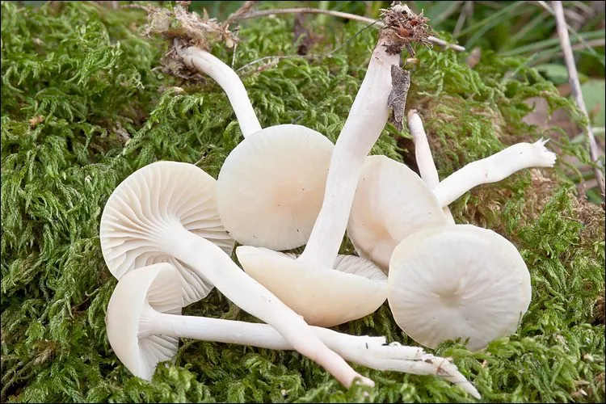

真菌 · 真菌界
白蜡伞 Hygrocybe virginea

蜡伞科蜡伞属小型伞菌，菌盖白色至乳白色、蜡质半透明，生于草地，虽有人食用但易与有毒白色菌混淆，不建议采食。
- 分类
- 门担子菌门纲伞菌纲目伞菌目科蜡伞科属蜡伞属
- 栖息环境
- 温带牧场、草坪与林缘草地，秋季成片发生
- 地理分布
- 欧洲、北美与亚洲温带，中国北方与西南草地有分布
- 保护级别
- IUCN 暂无评估；草地生境减少使部分蜡伞类种群下降
物种志
白蜡伞的子实体小型，菌盖直径 2–6 厘米，初钟形后平展，白色至乳白色，表面蜡质、半透明，具放射状条纹，湿润时黏滑。菌肉薄，白色；菌褶直生至延生，白色，较稀疏；菌柄圆柱形，长 3–7 厘米，白色，中空。孢子印白色，孢子椭圆形，光滑。
本种分布于欧洲、北美与亚洲的温带草地，生于牧场、草坪与林缘草地，常在秋季成片出现。它属于蜡伞属，菌盖蜡质、色彩素净，是草地真菌中的常见种类。白蜡伞在某些地区被列为可食菌，但肉质薄、风味平淡，且白色小型伞菌中不乏有毒种类（如某些白色丝盖伞、杯伞），极容易混淆，因此不建议自行采食。蜡伞类真菌对草地生境变化敏感，可作为草地健康状况的指示生物。
形态与习性
- 菌盖白色至乳白色，直径 2–6 厘米，蜡质
- 菌褶直生至延生，白色、较稀疏
- 菌柄圆柱形，长 3–7 厘米，白色中空
- 孢子印白色，孢子椭圆形
- 生境牧场、草坪与林缘草地，秋季发生
- 食用性有人食用，但易与有毒白色菌混淆，不建议采食
趣味知识
- 白蜡伞的菌盖呈蜡质、半透明，湿润时摸起来滑腻。
- 它常成片出现在秋季的牧场与草坪上，是草地真菌的代表。
- 白色小型伞菌中不乏有毒种类，白蜡伞极易与它们混淆，不建议采食。
- 蜡伞类真菌对草地施肥与耕作敏感，可作为草地生态的指示物种。